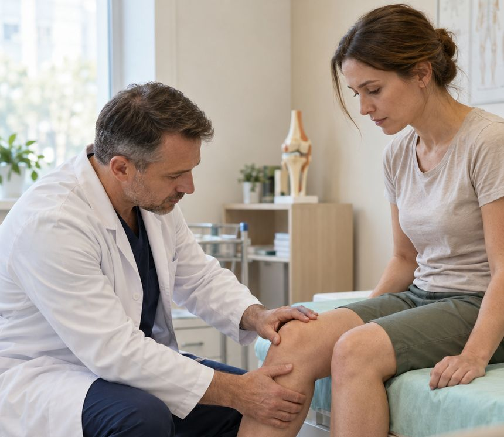

PRP или SVF: в чём разница и кому что может подойти
Оба метода используют собственные ткани пациента, но устроены по-разному. Сравниваем, откуда берут материал, как проходит процедура, сколько длится восстановление и сколько это стоит.

PRP- и SVF-терапия — два метода регенеративной медицины, о которых пациенты чаще всего спрашивают травматолога-ортопеда при боли в суставах. Оба используют собственные ткани человека, поэтому их нередко путают. Разница — в источнике материала, составе, сложности процедуры и стоимости.
Сразу оговоримся: в этой статье нет ответа «какой метод лучше». Он зависит от диагноза, стадии заболевания и состояния здоровья, и выбор делает врач после обследования. Наша задача — помочь вам прийти на консультацию подготовленным.
Если совсем коротко
- PRP — плазма, обогащённая тромбоцитами. Её получают из собственной крови: несколько минут на заборе, центрифугирование и инъекция. Обычно проводят курсом.
- SVF — клеточная фракция из собственной жировой ткани. Требует небольшого забора жира под местной анестезией, процедура сложнее и дороже. В нашем центре её выполняют в комбинации с PRP.
Что такое PRP
PRP (platelet-rich plasma) — плазма, обогащённая тромбоцитами. Тромбоциты известны как клетки, которые участвуют в свёртывании крови, но в них также содержатся факторы роста — сигнальные белки, влияющие на восстановление тканей и воспаление.
У пациента берут кровь из вены, пробирку помещают в центрифугу, и кровь разделяется на фракции. Часть плазмы с высокой концентрацией тромбоцитов врач вводит в нужную зону: в полость сустава или в околосуставные ткани — связки, сухожилия, места их прикрепления.
PRP применяют не только в ортопедии. В гинекологии эту методику используют, например, для восстановления слизистых, в дерматологии — для кожи. Подробнее о гинекологическом применении — на странице лазерной и регенеративной гинекологии.
Важно понимать, что PRP — не один стандартный препарат. Концентрация тромбоцитов, объём плазмы и наличие в ней лейкоцитов зависят от системы пробирок и методики приготовления. Поэтому результаты исследований разных клиник и научных групп сложно сравнивать напрямую. В целом для артроза коленного сустава накоплены данные о том, что PRP может уменьшать боль и улучшать функцию у части пациентов, особенно на ранних стадиях, но рекомендации профессиональных сообществ пока различаются.
Что такое SVF
SVF (stromal vascular fraction) — стромально-васкулярная фракция жировой ткани. Под местной анестезией через небольшой прокол забирают немного жира, обрабатывают его и получают взвесь клеток: мезенхимальных стромальных клеток, клеток сосудистой стенки, иммунных клеток. Эту взвесь вместе с PRP вводят в сустав.
Подробно о том, как устроен метод, мы рассказали в статье «SVF-терапия простыми словами».
Оба метода работают не за счёт «новых тканей», а через влияние на воспаление и обменные процессы. Результат индивидуален и развивается постепенно.
Сравнение в таблице
| Параметр | PRP | SVF-PRP |
|---|---|---|
| Источник | Собственная кровь из вены | Собственная жировая ткань и кровь |
| Что вводят | Плазму с высокой концентрацией тромбоцитов | Клеточную фракцию жировой ткани вместе с плазмой |
| Дополнительное вмешательство | Нет, только забор крови | Забор небольшого количества жира под местной анестезией |
| Длительность визита | Обычно короче | Дольше: забор, обработка ткани и введение |
| Схема | Чаще курсом из нескольких процедур, схему определяет врач | Как правило, одна процедура; повторение — по решению врача |
| После процедуры | Возможна временная болезненность и отёк в зоне укола | Дополнительно — отёк и синяки в зоне забора жира, рекомендации по нагрузке |
| Когда обсуждают | Ранние стадии артроза, поражения связок и сухожилий | Остеоартроз ранней и средней стадии, когда базовое лечение помогает недостаточно |
| Цена в ЦСМ | 6 000 ₽ за 1 пробирку (внутри- или околосуставно) | 49 500 ₽ — 1 сустав, 89 500 ₽ — 2 сустава |
Цены по прайсу на 01.11.2026. Анестезия, если она нужна, оплачивается отдельно — точную стоимость лечения врач назовёт после консультации.
Кому может подойти PRP
- начальные стадии остеоартроза, когда боль появляется при нагрузке;
- хронические воспалительные и дегенеративные поражения сухожилий и мест их прикрепления (например, «локоть теннисиста»);
- последствия некоторых травм связок — по оценке врача;
- пациенты, которым по каким-то причинам не подходит или пока не нужно более сложное вмешательство.
Кому может подойти SVF
- остеоартроз ранней или средней стадии, при котором консервативное лечение — ЛФК, снижение веса, лекарства, курсы PRP — дало недостаточный эффект;
- пациенты, готовые к небольшому дополнительному вмешательству (забору жира) и восстановлению после него.
На поздних стадиях артроза, когда хрящ сильно разрушен, обе методики, как правило, менее эффективны, и врач может рекомендовать другие варианты, включая консультацию хирурга.
Общие противопоказания для обоих методов: онкологические заболевания, острые инфекции, воспаление кожи в зоне введения, некоторые заболевания крови и нарушения свёртываемости, беременность и грудное вскармливание. Если вы принимаете препараты, влияющие на свёртываемость, или обезболивающие из группы НПВС, сообщите об этом врачу — не отменяйте их самостоятельно.
Как врач выбирает метод
- Уточняет диагноз. Боль в колене может быть связана не только с артрозом, но и с повреждением мениска, связок, воспалением сухожилий или проблемами позвоночника.
- Оценивает стадию. Для этого нужны рентгенограммы, при необходимости МРТ или УЗИ сустава.
- Учитывает общее здоровье, принимаемые препараты, образ жизни и ожидания пациента.
- Предлагает план. Иногда это одна из методик, иногда — их сочетание с лечебной физкультурой и другими мерами, а иногда врач объясняет, почему регенеративные методы в вашем случае не подходят.
Как подготовиться к процедуре
Подготовку к PRP и SVF-PRP врач объясняет на консультации. Обычно рекомендации такие:
- заранее принести рентгенограммы, заключения МРТ или УЗИ сустава, выписки о предыдущем лечении;
- сдать анализы, которые назначит врач, — например, общий анализ крови;
- сообщить обо всех принимаемых препаратах. Некоторые обезболивающие и противовоспалительные средства могут влиять на функцию тромбоцитов, поэтому врач может попросить временно их не принимать — только по его рекомендации;
- в день процедуры поесть лёгкую нежирную пищу и пить достаточно воды: жирная еда может ухудшить качество плазмы;
- воздержаться от алкоголя накануне;
- для SVF — уточнить, какую одежду и компрессионное бельё взять с собой, и спланировать щадящий режим на ближайшие дни.
Если перед процедурой вы почувствовали себя плохо, поднялась температура или появилось воспаление кожи в зоне введения, сообщите об этом в центр: процедуру, скорее всего, перенесут.
Когда обратиться к врачу
Запишитесь на консультацию травматолога-ортопеда, если боль в суставе держится больше нескольких недель, мешает ходить, подниматься по лестнице или спать, если появились отёк, скованность по утрам или ощущение нестабильности. Срочно обращайтесь за помощью, если сустав резко опух, покраснел, стал горячим или поднялась температура.
Частые вопросы
Можно ли начать с PRP, а потом перейти на SVF?
Да, такой порядок возможен. Если курс PRP дал недостаточный эффект, врач может обсудить другие варианты, в том числе SVF-терапию, — при отсутствии противопоказаний.
Сколько процедур PRP нужно?
Количество процедур и интервал между ними врач определяет индивидуально, в зависимости от диагноза и реакции на лечение.
Это безопасно, раз материал собственный?
Собственные ткани снижают риск аллергических реакций, но любая инъекция в сустав — медицинское вмешательство с возможными осложнениями, например инфекцией или временным усилением боли. Поэтому процедуру проводят в стерильных условиях после консультации.
Помогают ли эти методы при артрозе 4 стадии?
На поздних стадиях эффективность регенеративных методов, как правило, низкая. Врач оценит снимки и расскажет, какие варианты лечения уместны.
Подберём метод после обследования
Травматолог-ортопед осмотрит сустав, изучит снимки и объяснит, подходит ли вам PRP, SVF-PRP или другое лечение. Консультация — 2 300 ₽.
Записаться к ортопеду SVF- и PRP-терапия